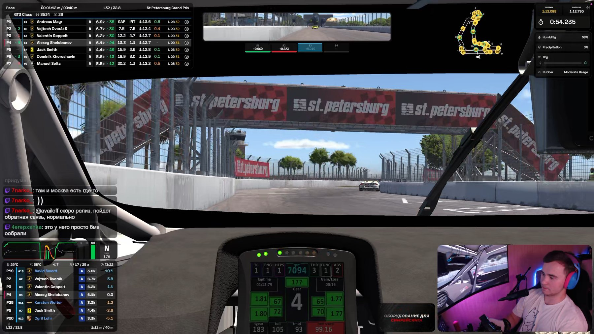
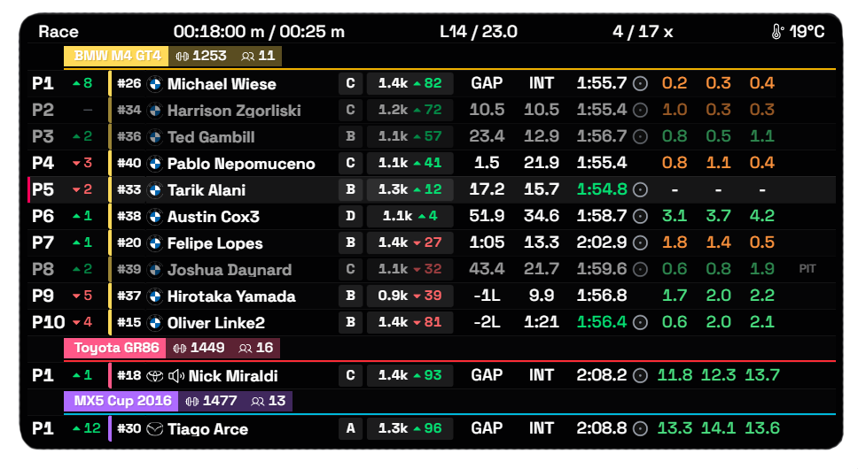
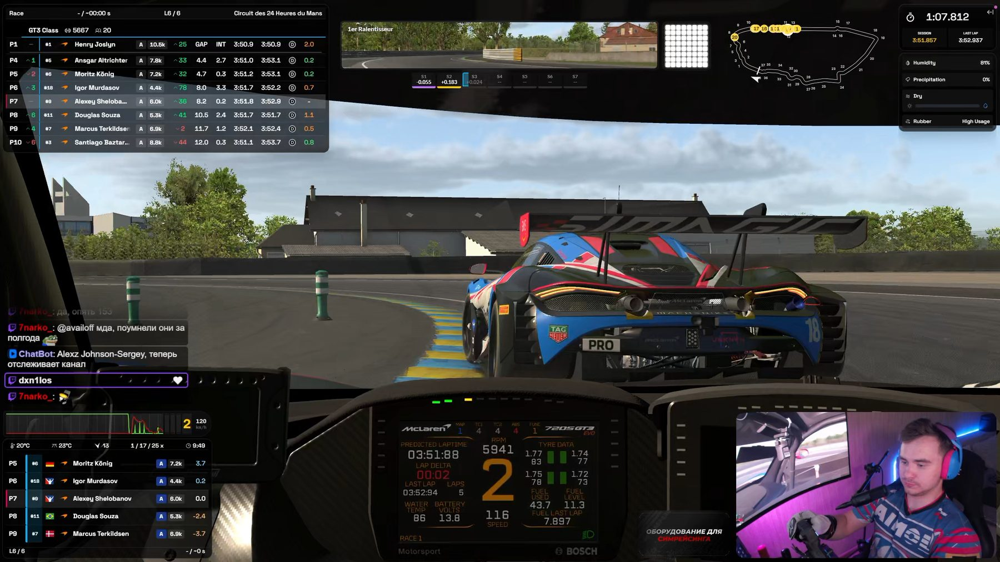

Automatic incident detection
Offs, loss of control, crashes and light contact — all caught automatically from telemetry, no manual logging.

TUOverlays
TU Overlays turns iRacing telemetry into 40 separate windows on top of the sim: position in class and overall, gaps to the cars around you, fuel, weather, traffic and your own inputs. Every window is tuned to fit you, and Race Control keeps a live log of every incident — click a row and the replay jumps straight to it.
DownloadTurn on only what you need for the current session. Customize every widget to fit you.

Know your place — in class and overall.
Full running order broken down by class, with gaps and best laps. Class and overall position in a single row.
Each widget is its own window: turn on the ones you need, place them anywhere, set the size, opacity and columns.
While everyone else is watching the race, you're reviewing it. Race Control catches incidents in real time — all you do is click the row to see the replay.
Offs, loss of control, crashes and light contact — all caught automatically from telemetry, no manual logging.
Click a row and the replay scrubs itself to the moment, with the camera switching to the right car.
Open a driver's card to see their full incident history for the session, plus their total penalty points.
Reviewed incidents fade out on their own; flag the ones that matter and jump back to them in one click.
Move Race Control to a second monitor — handy for streaming and for working alongside a co-commentator.
* On the site, 10s and 15s do not rewind a full 10 and 15 seconds: the demo only carries short excerpts cut around each incident, so the earlier seconds simply are not there. In the app, Race Control rewinds the full iRacing replay, so 5, 10 and 15 seconds all work as intended.
Measured on a reference build: Ryzen 9 9800X3D, RTX 5070 Ti, 1440p, 30–60 cars on track.
One core, full starting grid.
Median across 60 sessions, rendered as a separate layer.
Every widget is captured separately.
Click a card to see the interface up close.

Racers who care about what's happening around their car: Relative and Fuel keep the data you need in view, and Race Control keeps every incident on record for review and protests after the race.
Streamers who need a readable broadcast: individual widgets can be arranged into your own layout and tuned for OBS capture.
TU Overlays is an independent project we're building toward one simple goal: the most convenient, modern and flexible overlay app for iRacing.
We didn't want to just make another overlay. We wanted to build a tool people actually enjoy using — one that everyone can configure to fit themselves.
The idea came from our own experience. We liked how accurate Kapps' data was, but it lacked a modern interface and freedom to customize. Plenty of useful features were either missing everywhere or locked behind a paid subscription elsewhere. So we decided to try it our way: keep the telemetry accuracy, add a modern design, and include features competitors often charge for.
Right now TU Overlays is just getting started. So bugs, rough edges, or things that don't quite work the way they should can still show up here and there. That's normal — the project grows together with the people who use it.
That's exactly why your feedback matters to us.
On our Discord server you can do more than just report a bug. You can suggest a new feature, tell us what you feel is missing from the overlays, share your own idea, or just talk about what a genuinely convenient iRacing tool should look like.
TU Overlays isn't only built by us. You can shape what it becomes too.
If something's missing — tell us. If you found a problem — help us track it down. If you have an idea — bring it with you.
Maybe your idea will be the next feature in TU Overlays.
Right now — nothing. TU Overlays is completely free.
From the start, we wanted to build an app where useful features aren't locked behind a subscription. So everything available in the current version can be used for free.
TU Overlays runs on Windows 10 and Windows 11 (64-bit).
There's no macOS or Linux version right now. Since iRacing itself officially only runs on Windows, that's the platform we've focused on for now.
We've tried to make sure the overlays don't get in the way of what matters — the race itself.
In our tests the median drop was around 3.4 FPS on a full starting grid. Overlays run as separate windows on top of the simulator and don't touch its render loop directly.
Of course, results can vary depending on your PC and settings.
Yes. We had streamers in mind from the start.
That's one of the core ideas behind TU Overlays.
You can change each widget's position and size, scale, opacity, class colors, visible columns, row count and units.
Don't like the default look? Build your own.
Yes.
Settings save to a profile file. You can send it to a friend, share it on Discord, or just keep it as a backup.
And if someone's already built a setup you like, you can import it in just a couple of clicks.
No.
We don't want to add extra sign-ups or accounts where they're not needed. The app works with telemetry locally and doesn't send it to our servers.
All you need is an active iRacing account with a valid subscription.
There are 38 independent widgets available right now, and each can be toggled, moved, resized and configured on its own:
And that's just what's here now. TU Overlays keeps evolving, so this list will keep changing along with the project and your ideas.
Race Control is a separate part of TU Overlays that helps you make sense of what happened out on track.
It automatically tracks incidents from telemetry — crashes, off-track moments and lost-control events — collects them in a log, and lets you jump straight to the right moment in the replay.
You can look through a specific driver's incident history, flag important moments and come back to them later.
It's especially useful after a race, when you want to understand what actually happened instead of relying on memory.
Tell us. It genuinely matters.
TU Overlays is still early in its journey, and we're not pretending the project is already perfect. Something might not work quite right somewhere, or a setting you need might be missing — that's exactly why we need your feedback.
Join our Discord, tell us about issues, suggest ideas and share your experience.
The feature you suggest today might show up in TU Overlays tomorrow.
Message us on Discord.
If you couldn't find an answer, it might be a question worth adding to this FAQ. And if you bring up something we haven't even thought of yet — even better.
TU Overlays is built for the iRacing community. So it matters to us not just to tell you about the project, but to listen to you too.
Installation takes a minute. The Download button unlocks automatically at release — no need to refresh the page.